|
|
HELP FIND THE FOLLOWING LOCATIONS
PAGE 92
THE SAINT: The Elusive Ellshaw
(John Moxey:
1963)
Unknown1 - Florence Ellshaw
goes to Anne Ripwell’s apartment to
talk to Simon and Anne about seeing her husband.
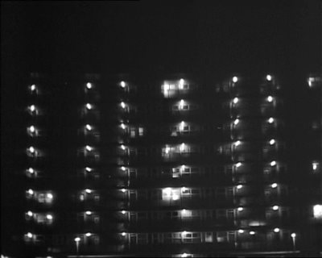
Stanhope Mews
West, SW7 -
Simon and Anne go to 11 Duchess
Place as no one answers the door Simon Goes round the back to break in
(the
alley up the side of the Stanhope Arms pub in Gloucester Road. The
alley is no
longer open to the public).
(Identified by Marishka von Saatz, July 2012)
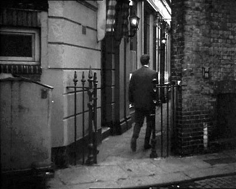
Unknown 2 - After visiting the empty 11 Duchess Place Simon drives Anne Ripwell to talk to Mrs Ellshaw at home.
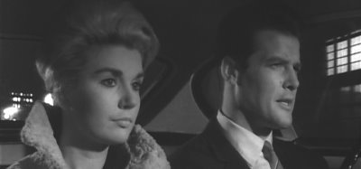
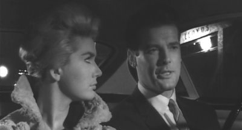
N21: London Road
(and Silver
Hill), near. Shenley
- Kenneth Ripwell
leaves his father's house for London in his sports car he is followed
by Simon
in his Volvo.
(Identified by Alan Field, March 2010)
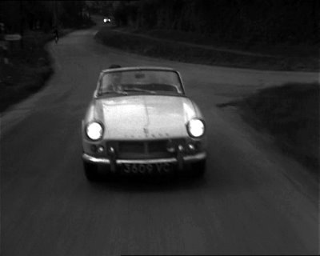
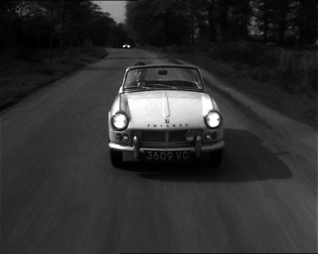
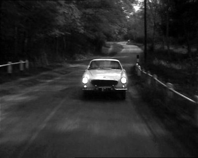
Unknown 3 - Kenneth Ripwell leaves his father's house for London in his sports car he is followed by Simon in his Volvo.
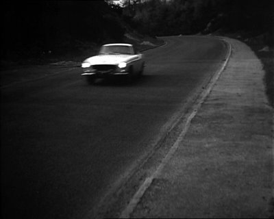
Station Road/Brickhill Road junction, Bow Brickhill Station, Buckinghamshire - Kenneth Ripwell leaves his father's house for London in his sports car he is followed by Simon in his Volvo.
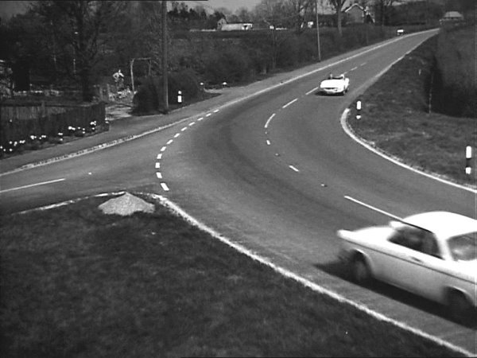
Bow Brickhill
Station, Buckinghamshire - Kenneth Ripwell
leaves his father's house for
London in his sports car he is followed by Simon in his Volvo. Simon
manages to
loose him at a railway crossing.
(Identified by Alan Field, March 2010)

Bow Brickhill
Station,Buckinghamshire - Kenneth Ripwell
leaves his father's house for
London in his sports car he is followed by Simon in his Volvo. Simon
manages to
loose him at a railway crossing.
(Identified by Alan Field, March 2010)
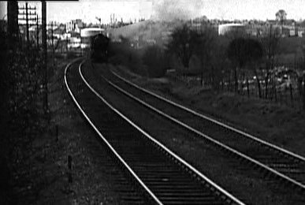
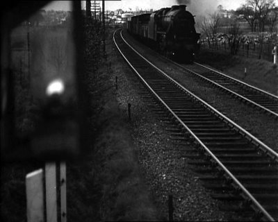
THE
SAINT: Staring the Saint (James Hill: 1963)
Oak Hill Park, London, NW3 - Simon gets a
call from Byron Ufferlitz
to meet him immediately so Simon takes April Quest back to her
apartment before
setting off in his Volvo to see Ufferlitz.
(Identified by Geoff Dodd, March 2024)
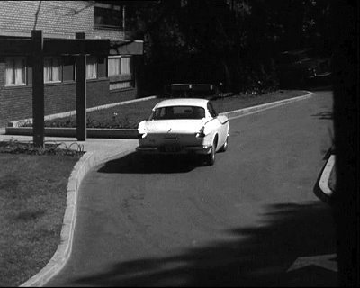
G34: Camlet Way, Hadley Wood -
Simon gets a call from Byron Ufferlitz to meet him immediately so Simon
drives there and parks his Volvo on a side road next to the house (Wood
Ride). After finding Ufferlitz dead and Peggy Warden in the house (4
Camlet Way) he helps her escape as the police arrive. They both make
their escape in the Volvo.
(Identified by Geoff Dodd, February 2024)
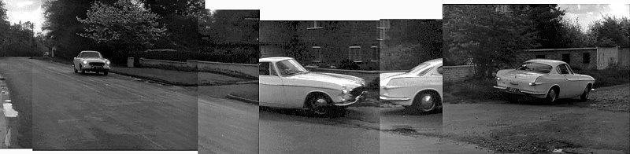
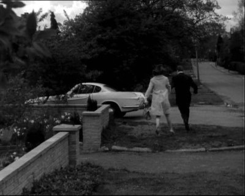
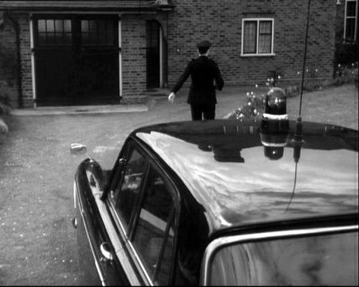
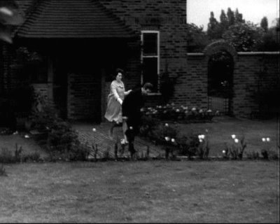
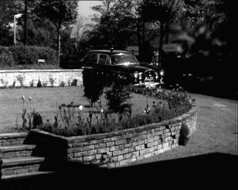
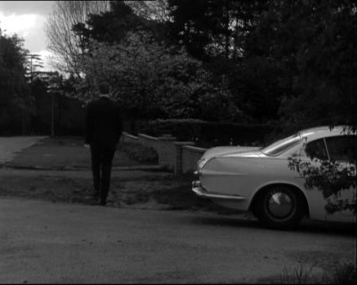
Unknown 2 - Sergeant Graham drives Inspector Teal back to the film studios to confront Simon Templar.
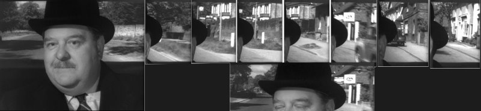
Unknown 3 - Sergeant Graham drives Inspector Teal back to the film studios to confront Simon Templar.
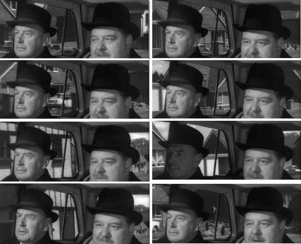
Unknown 4 - Sergeant Graham and Inspector Teal discuss the case back at Scotland Yard when he receives news of Orland Flane’s whereabouts.
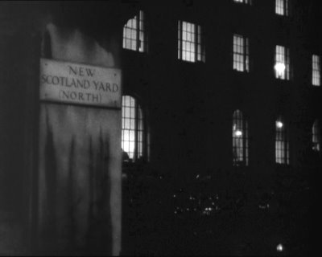
Think you know a spot? Need a bigger image? Email me.
< Previous | Index | Avengerland | Next >
Copyright © 2024 Anthony R. McKay